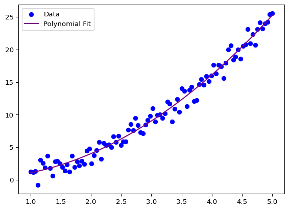

Often we want to find a model which can explain the data. It is important to understand the data and the model to be able to interpret the results and make predictions.
The simplest model is the linear regression model. It assumes that the data has a linear relationship with the target variable. For example, if we have a single feature \(x\) and a target variable \(y\), the linear regression model can be defined as:
\[
y = \beta_0 + \beta_1 x + \epsilon
\]
where \(y\) is the target variable, \(x\) is the feature, \(\beta_0\) and \(\beta_1\) are the coefficients, and \(\epsilon\) is the error term.
For multiple features \(x_1, x_2, \ldots, x_n\), the linear regression model can be defined as:
where \(y\) is the target variable, \(x_1, x_2, \ldots, x_n\) are the features, \(\beta_0, \beta_1, \ldots, \beta_n\) are the coefficients, and \(\epsilon\) is the error term.
In python there exists serveral libraries which can be used to fit a linear regression model.
Using scipy
A easy way is to use scipy library. The scipy library has a function called linregress which can be used to fit a linear regression model. The function returns the slope, intercept, r-value, p-value, and the standard error of the estimate. And with scipy version 1.15.2 also the intercept error.
slope: 2.376673 intercept: -6.207307
R-squared: 0.421355
p-value: 0.235928
standard error: 1.608016
Intercept error: 5.333186
95% confidence interval: -23.179884531291943 to 10.765270053128315
Important
For older version scipyonly returned 5 values with fields slope, intercept, rvalue, pvalue and stderr. For compatiblity reasons the return values are 5 elements tuple.
from scipy.stats import linregressslope, intercept, r, p, se = linregress(x, y)
And if you want to get the intercept error you can use the following return value as a object:
from scipy.stats import linregressresults = linregress(x, y)print(results.intercept_stderr)
5.333185752114079
Using statsmodels
Another library is statsmodels. The statsmodels library provides more detailed information about the model, such as the coefficients, standard errors, t-values, p-values, and confidence intervals.
OLS Regression Results
==============================================================================
Dep. Variable: y R-squared: 0.035
Model: OLS Adj. R-squared: -0.287
Method: Least Squares F-statistic: 0.1072
Date: Mon, 07 Apr 2025 Prob (F-statistic): 0.765
Time: 09:08:24 Log-Likelihood: -13.493
No. Observations: 5 AIC: 30.99
Df Residuals: 3 BIC: 30.21
Df Model: 1
Covariance Type: nonrobust
==============================================================================
coef std err t P>|t| [0.025 0.975]
------------------------------------------------------------------------------
const -0.7290 4.869 -0.150 0.890 -16.223 14.765
x1 0.4807 1.468 0.327 0.765 -4.191 5.152
==============================================================================
Omnibus: nan Durbin-Watson: 2.052
Prob(Omnibus): nan Jarque-Bera (JB): 0.634
Skew: -0.750 Prob(JB): 0.728
Kurtosis: 2.109 Cond. No. 8.37
==============================================================================
Notes:
[1] Standard Errors assume that the covariance matrix of the errors is correctly specified.
Using scikit-learn
One of the most popular libraries is scikit-learn. The following code shows how to fit a linear regression model using scikit-learn:
from sklearn.linear_model import LinearRegressionimport numpy as npimport matplotlib.pyplot as plt# Sample dataX = np.linspace(1, 5, 100).reshape(-1, 1)y =2* X +1+ np.random.normal(0, 1, 100).reshape(-1, 1)# Model fittingmodel = LinearRegression()model.fit(X, y)# Predictionsy_pred = model.predict(X)# Plotplt.scatter(X, y, color='blue', label='Data')plt.plot(X, y_pred, color='red', label='Linear Fit')plt.legend()plt.show()
Non-Linear Fits
Linear regression may not always be sufficient, especially for complex relationships. Non-linear models provide more flexibility.
Polynomial Regression
Polynomial regression is a type of linear regression where the relationship between the independent variable \(x\) and the dependent variable \(y\) is modeled as an \(n\)-th degree polynomial.
import numpy as npimport matplotlib.pyplot as plt# Sample dataX = np.linspace(1, 5, 100)y = X**2+ np.random.normal(0, 1, 100)model = np.polyfit(X, y, 2)model = np.poly1d(model)X_range = np.linspace(1, 5, 100)y_fit = model(X_range)print(model)plt.scatter(X, y, color='blue', label='Data')plt.plot(X_range, y_fit, color='purple', label='Polynomial Fit')plt.legend()
2
0.9375 x + 0.3259 x - 0.3014

Curve Fitting with scipy
scipy provides the curve_fit function to fit a non-linear model to the data. The function requires the model function and the data as input.
from scipy.optimize import curve_fitdef nonlinear_func(x, a, b, c):return a * np.sin(b * x) + cparams, _ = curve_fit(nonlinear_func, X.flatten(), y)X_range = np.linspace(1, 5, 100)y_fit = nonlinear_func(X_range, *params)plt.scatter(X, y, color='blue', label='Data')plt.plot(X_range, y_fit, color='purple', label='Non-Linear Fit')plt.legend()plt.show()
Source Code
---title: "Inferential Statistics"execute: echo: True eval: Truecode-links: - text: "Open in Colab" href: "https://colab.research.google.com/github/stkroe/PythonForChemists/blob/main/course/notebooks/SimpleDataModels.ipynb" icon: "laptop" - text: "Download Code" href: "https://github.com/stkroe/PythonforChemists/blob/main/course/notebooks/SimpleDataModels.ipynb" icon: "journal"---Difficulty level: <span style="color:#2B7492">{{< bi star-fill >}} </span># Data Models {.unnumbered}## Linear Regression {.unnumbered}Often we want to find a model which can explain the data.It is important to understand the data and the model to be able to interpret the results and make predictions.The simplest model is the linear regression model. It assumes that the data has a linear relationship with the target variable. For example, if we have a single feature $x$ and a target variable $y$, the linear regression model can be defined as:$$y = \beta_0 + \beta_1 x + \epsilon$$where $y$ is the target variable, $x$ is the feature, $\beta_0$ and $\beta_1$ are the coefficients, and $\epsilon$ is the error term.For multiple features $x_1, x_2, \ldots, x_n$, the linear regression model can be defined as:$$y = \beta_0 + \beta_1 x_1 + \beta_2 x_2 + \ldots + \beta_n x_n + \epsilon$$where $y$ is the target variable, $x_1, x_2, \ldots, x_n$ are the features, $\beta_0, \beta_1, \ldots, \beta_n$ are the coefficients, and $\epsilon$ is the error term.In `python` there exists serveral libraries which can be used to fit a linear regression model.### Using `scipy`{.unnumbered}A easy way is to use `scipy` library. The `scipy` library has a function called `linregress` which can be used to fit a linear regression model. The function returns the slope, intercept, r-value, p-value, and the standard error of the estimate. And with scipy version 1.15.2 also the intercept error.```{python}from scipy.stats import linregressimport numpy as npx = [1, 2, 3, 4, 5]y = x*np.random.normal(0, 1, 5)+np.random.normal(0, 1, 5)results = linregress(x, y)slope = results.slopeintercept = results.interceptr_value = results.rvaluep_value = results.pvaluestd_err = results.stderrintercept_err = results.intercept_stderrprint("slope: %f intercept: %f"% (slope, intercept))print("R-squared: %f"% r_value**2)print("p-value: %f"% p_value)print("standard error: %f"% std_err)print("Intercept error: %f"%intercept_err)# Two-sided inverse Students t-distribution# p - probability, df - degrees of freedomfrom scipy.stats import ttinv =lambda p, df: abs(t.ppf(p/2, df))print("95% confidence interval: "+str(intercept - tinv(0.05, len(x)-2)*intercept_err) +" to "+str(intercept + tinv(0.05, len(x)-2)*intercept_err))```:::{.callout-important}For older version `scipy`only returned 5 values with fields slope, intercept, rvalue, pvalue and stderr. For compatiblity reasons the return values are 5 elements tuple.```{python}from scipy.stats import linregressslope, intercept, r, p, se = linregress(x, y)```And if you want to get the intercept error you can use the following return value as a object:```{python}from scipy.stats import linregressresults = linregress(x, y)print(results.intercept_stderr)```:::### Using `statsmodels`{.unnumbered}Another library is `statsmodels`. The `statsmodels` library provides more detailed information about the model, such as the coefficients, standard errors, t-values, p-values, and confidence intervals.```{python}import statsmodels.api as smimport numpy as npX = np.array([1, 2, 3, 4, 5])y = X*np.random.normal(0, 1, 5)+np.random.normal(0, 1, 5)X_with_const = sm.add_constant(X) # Add intercept termmodel = sm.OLS(y, X_with_const).fit()print(model.summary())```### Using `scikit-learn` {.unnumbered}One of the most popular libraries is `scikit-learn`. The following code shows how to fit a linear regression model using `scikit-learn`:```{python}from sklearn.linear_model import LinearRegressionimport numpy as npimport matplotlib.pyplot as plt# Sample dataX = np.linspace(1, 5, 100).reshape(-1, 1)y =2* X +1+ np.random.normal(0, 1, 100).reshape(-1, 1)# Model fittingmodel = LinearRegression()model.fit(X, y)# Predictionsy_pred = model.predict(X)# Plotplt.scatter(X, y, color='blue', label='Data')plt.plot(X, y_pred, color='red', label='Linear Fit')plt.legend()plt.show()```---## Non-Linear FitsLinear regression may not always be sufficient, especially for complex relationships. Non-linear models provide more flexibility.### Polynomial RegressionPolynomial regression is a type of linear regression where the relationship between the independent variable $x$ and the dependent variable $y$ is modeled as an $n$-th degree polynomial.```{python}import numpy as npimport matplotlib.pyplot as plt# Sample dataX = np.linspace(1, 5, 100)y = X**2+ np.random.normal(0, 1, 100)model = np.polyfit(X, y, 2)model = np.poly1d(model)X_range = np.linspace(1, 5, 100)y_fit = model(X_range)print(model)plt.scatter(X, y, color='blue', label='Data')plt.plot(X_range, y_fit, color='purple', label='Polynomial Fit')plt.legend()```### Curve Fitting with `scipy``scipy` provides the `curve_fit` function to fit a non-linear model to the data. The function requires the model function and the data as input.```{python}from scipy.optimize import curve_fitdef nonlinear_func(x, a, b, c):return a * np.sin(b * x) + cparams, _ = curve_fit(nonlinear_func, X.flatten(), y)X_range = np.linspace(1, 5, 100)y_fit = nonlinear_func(X_range, *params)plt.scatter(X, y, color='blue', label='Data')plt.plot(X_range, y_fit, color='purple', label='Non-Linear Fit')plt.legend()plt.show()```